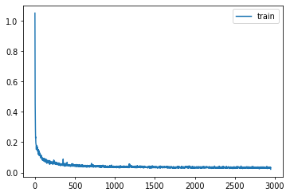
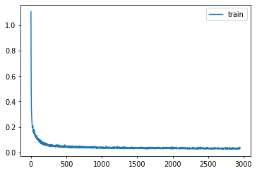
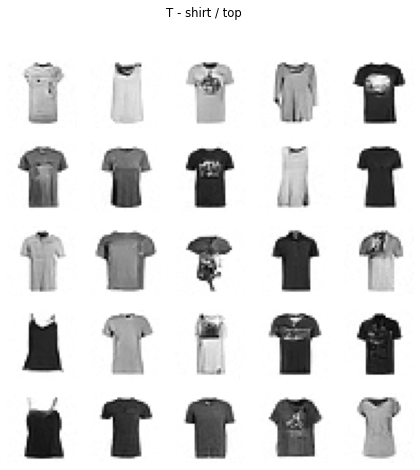
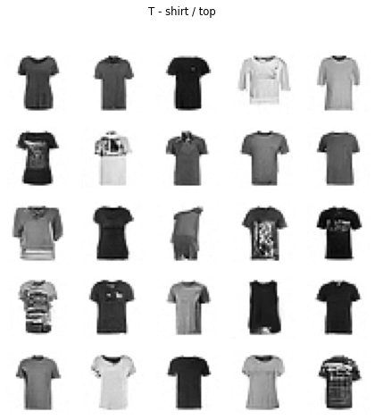

import os
os.environ['CUDA_VISIBLE_DEVICES']='1'Diffusion unet
torch.set_printoptions(precision=4, linewidth=140, sci_mode=False)
torch.manual_seed(1)
mpl.rcParams['image.cmap'] = 'gray_r'
mpl.rcParams['figure.dpi'] = 70
import logging
logging.disable(logging.WARNING)
set_seed(42)
if fc.defaults.cpus>8: fc.defaults.cpus=8xl,yl = 'image','label'
name = "fashion_mnist"
bs = 512
dsd = load_dataset(name)@inplace
def transformi(b): b[xl] = [F.pad(TF.to_tensor(o), (2,2,2,2))-0.5 for o in b[xl]]
tds = dsd.with_transform(transformi)
dls = DataLoaders(dl_ddpm(tds['train']), dl_ddpm(tds['test']))
dl = dls.train
(xt,t),eps = b = next(iter(dl))Train
Based on Diffusers
# This version is giving poor results - use the cell below instead
class SelfAttention(nn.Module):
def __init__(self, ni, attn_chans):
super().__init__()
self.attn = nn.MultiheadAttention(ni, ni//attn_chans, batch_first=True)
self.norm = nn.BatchNorm2d(ni)
def forward(self, x):
n,c,h,w = x.shape
x = self.norm(x).view(n, c, -1).transpose(1, 2)
x = self.attn(x, x, x, need_weights=False)[0]
return x.transpose(1,2).reshape(n,c,h,w)lr = 1e-2
epochs = 25
opt_func = partial(optim.Adam, eps=1e-5)
tmax = epochs * len(dls.train)
sched = partial(lr_scheduler.OneCycleLR, max_lr=lr, total_steps=tmax)
cbs = [DeviceCB(), ProgressCB(plot=True), MetricsCB(), BatchSchedCB(sched), MixedPrecision()]
model = EmbUNetModel(in_channels=1, out_channels=1, nfs=(32,64,128,256), num_layers=2)
learn = Learner(model, dls, nn.MSELoss(), lr=lr, cbs=cbs, opt_func=opt_func)learn.fit(epochs)| loss | epoch | train |
|---|---|---|
| 0.150 | 0 | train |
| 0.086 | 0 | eval |
| 0.069 | 1 | train |
| 0.171 | 1 | eval |
| 0.057 | 2 | train |
| 0.071 | 2 | eval |
| 0.050 | 3 | train |
| 0.055 | 3 | eval |
| 0.045 | 4 | train |
| 0.050 | 4 | eval |
| 0.043 | 5 | train |
| 0.073 | 5 | eval |
| 0.041 | 6 | train |
| 0.044 | 6 | eval |
| 0.039 | 7 | train |
| 0.044 | 7 | eval |
| 0.038 | 8 | train |
| 0.043 | 8 | eval |
| 0.038 | 9 | train |
| 0.058 | 9 | eval |
| 0.038 | 10 | train |
| 0.044 | 10 | eval |
| 0.036 | 11 | train |
| 0.042 | 11 | eval |
| 0.035 | 12 | train |
| 0.038 | 12 | eval |
| 0.035 | 13 | train |
| 0.039 | 13 | eval |
| 0.034 | 14 | train |
| 0.036 | 14 | eval |
| 0.034 | 15 | train |
| 0.036 | 15 | eval |
| 0.034 | 16 | train |
| 0.034 | 16 | eval |
| 0.034 | 17 | train |
| 0.035 | 17 | eval |
| 0.033 | 18 | train |
| 0.033 | 18 | eval |
| 0.033 | 19 | train |
| 0.033 | 19 | eval |
| 0.033 | 20 | train |
| 0.033 | 20 | eval |
| 0.033 | 21 | train |
| 0.032 | 21 | eval |
| 0.032 | 22 | train |
| 0.034 | 22 | eval |
| 0.032 | 23 | train |
| 0.032 | 23 | eval |
| 0.032 | 24 | train |
| 0.033 | 24 | eval |

Sampling
from miniai.fid import ImageEvalcmodel = torch.load('models/data_aug2.pkl')
del(cmodel[8])
del(cmodel[7])
@inplace
def transformi(b): b[xl] = [F.pad(TF.to_tensor(o), (2,2,2,2))*2-1 for o in b[xl]]
bs = 2048
tds = dsd.with_transform(transformi)
dls = DataLoaders.from_dd(tds, bs, num_workers=fc.defaults.cpus)
dt = dls.train
xb,yb = next(iter(dt))
ie = ImageEval(cmodel, dls, cbs=[DeviceCB()])sz = (2048,1,32,32)# set_seed(42)
preds = sample(ddim_step, model, sz, steps=100, eta=1.)
s = (preds[-1]*2)
s.min(),s.max(),s.shape
100.00% [100/100 00:53<00:00]
(tensor(-1.0918), tensor(1.4292), torch.Size([2048, 1, 32, 32]))show_images(s[:25].clamp(-1,1), imsize=1.5)ie.fid(s),ie.kid(s),s.shape(4.058064770194278, 0.010895456187427044, torch.Size([2048, 1, 32, 32]))preds = sample(ddim_step, model, sz, steps=100, eta=1.)
ie.fid(preds[-1]*2)
100.00% [100/100 00:53<00:00]
5.320260029850715preds = sample(ddim_step, model, sz, steps=50, eta=1.)
ie.fid(preds[-1]*2)
100.00% [50/50 00:26<00:00]
5.243807277315682preds = sample(ddim_step, model, sz, steps=50, eta=1.)
ie.fid(preds[-1]*2)
100.00% [50/50 00:26<00:00]
4.963977301033992Conditional model
def collate_ddpm(b):
b = default_collate(b)
(xt,t),eps = noisify(b[xl])
return (xt,t,b[yl]),eps@inplace
def transformi(b): b[xl] = [F.pad(TF.to_tensor(o), (2,2,2,2))-0.5 for o in b[xl]]
tds = dsd.with_transform(transformi)
dls = DataLoaders(dl_ddpm(tds['train']), dl_ddpm(tds['test']))
dl = dls.train
(xt,t,c),eps = b = next(iter(dl))class CondUNetModel(nn.Module):
def __init__( self, n_classes, in_channels=3, out_channels=3, nfs=(224,448,672,896), num_layers=1):
super().__init__()
self.conv_in = nn.Conv2d(in_channels, nfs[0], kernel_size=3, padding=1)
self.n_temb = nf = nfs[0]
n_emb = nf*4
self.cond_emb = nn.Embedding(n_classes, n_emb)
self.emb_mlp = nn.Sequential(lin(self.n_temb, n_emb, norm=nn.BatchNorm1d),
lin(n_emb, n_emb))
self.downs = nn.ModuleList()
for i in range(len(nfs)):
ni = nf
nf = nfs[i]
self.downs.append(DownBlock(n_emb, ni, nf, add_down=i!=len(nfs)-1, num_layers=num_layers))
self.mid_block = EmbResBlock(n_emb, nfs[-1])
rev_nfs = list(reversed(nfs))
nf = rev_nfs[0]
self.ups = nn.ModuleList()
for i in range(len(nfs)):
prev_nf = nf
nf = rev_nfs[i]
ni = rev_nfs[min(i+1, len(nfs)-1)]
self.ups.append(UpBlock(n_emb, ni, prev_nf, nf, add_up=i!=len(nfs)-1, num_layers=num_layers+1))
self.conv_out = pre_conv(nfs[0], out_channels, act=nn.SiLU, norm=nn.BatchNorm2d, bias=False)
def forward(self, inp):
x,t,c = inp
temb = timestep_embedding(t, self.n_temb)
cemb = self.cond_emb(c)
emb = self.emb_mlp(temb) + cemb
x = self.conv_in(x)
saved = [x]
for block in self.downs: x = block(x, emb)
saved += [p for o in self.downs for p in o.saved]
x = self.mid_block(x, emb)
for block in self.ups: x = block(x, emb, saved)
return self.conv_out(x)lr = 1e-2
epochs = 25
opt_func = partial(optim.Adam, eps=1e-5)
tmax = epochs * len(dls.train)
sched = partial(lr_scheduler.OneCycleLR, max_lr=lr, total_steps=tmax)
cbs = [DeviceCB(), ProgressCB(plot=True), MetricsCB(), BatchSchedCB(sched), MixedPrecision()]
model = CondUNetModel(10, in_channels=1, out_channels=1, nfs=(32,64,128,256), num_layers=2)
learn = Learner(model, dls, nn.MSELoss(), lr=lr, cbs=cbs, opt_func=opt_func)learn.fit(epochs)| loss | epoch | train |
|---|---|---|
| 0.178 | 0 | train |
| 0.099 | 0 | eval |
| 0.072 | 1 | train |
| 0.066 | 1 | eval |
| 0.053 | 2 | train |
| 0.053 | 2 | eval |
| 0.047 | 3 | train |
| 0.050 | 3 | eval |
| 0.045 | 4 | train |
| 0.045 | 4 | eval |
| 0.042 | 5 | train |
| 0.048 | 5 | eval |
| 0.041 | 6 | train |
| 0.060 | 6 | eval |
| 0.039 | 7 | train |
| 0.042 | 7 | eval |
| 0.037 | 8 | train |
| 0.039 | 8 | eval |
| 0.037 | 9 | train |
| 0.051 | 9 | eval |
| 0.036 | 10 | train |
| 0.039 | 10 | eval |
| 0.035 | 11 | train |
| 0.041 | 11 | eval |
| 0.035 | 12 | train |
| 0.041 | 12 | eval |
| 0.034 | 13 | train |
| 0.035 | 13 | eval |
| 0.034 | 14 | train |
| 0.035 | 14 | eval |
| 0.034 | 15 | train |
| 0.036 | 15 | eval |
| 0.033 | 16 | train |
| 0.037 | 16 | eval |
| 0.033 | 17 | train |
| 0.032 | 17 | eval |
| 0.032 | 18 | train |
| 0.036 | 18 | eval |
| 0.032 | 19 | train |
| 0.033 | 19 | eval |
| 0.032 | 20 | train |
| 0.032 | 20 | eval |
| 0.032 | 21 | train |
| 0.033 | 21 | eval |
| 0.032 | 22 | train |
| 0.033 | 22 | eval |
| 0.031 | 23 | train |
| 0.032 | 23 | eval |
| 0.031 | 24 | train |
| 0.033 | 24 | eval |

sz = (256,1,32,32)lbls = dsd['train'].features[yl].names
lbls['T - shirt / top',
'Trouser',
'Pullover',
'Dress',
'Coat',
'Sandal',
'Shirt',
'Sneaker',
'Bag',
'Ankle boot']set_seed(42)
cid = 0
preds = sample(cid, ddim_step, model, sz, steps=100, eta=1.)
s = (preds[-1]*2)
show_images(s[:25].clamp(-1,1), imsize=1.5, suptitle=lbls[cid])
100.00% [100/100 00:02<00:00]

set_seed(42)
cid = 0
preds = sample(cid, ddim_step, model, sz, steps=100, eta=0.)
s = (preds[-1]*2)
show_images(s[:25].clamp(-1,1), imsize=1.5, suptitle=lbls[cid])
100.00% [100/100 00:02<00:00]
